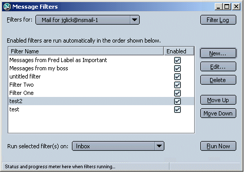
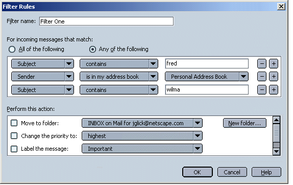
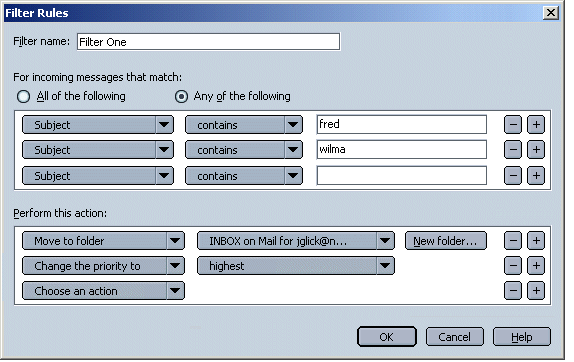
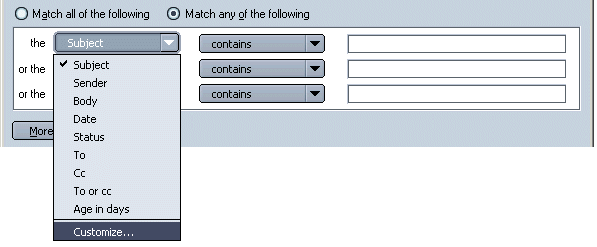
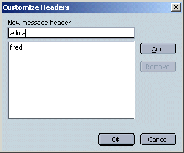
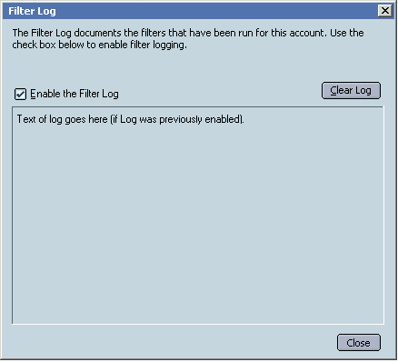
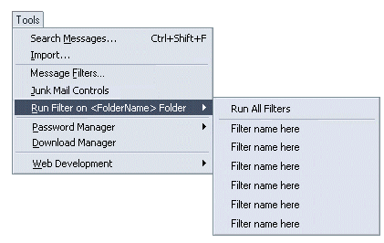

|
Buffy/Mozilla: Mail |
UI Specification
|
|
Message Filters |
Last
Modification:
|
|
Author: Jennifer Glick |
Status: Mostly Complete |
||||||||||
|
Quicklinks: Message Filters Dialog |
Feature Team
|
Filters - Enable users to create and maintain message filters so
that incoming or existing messages matching user defined criteria are
automatically identified and acted on, based on user defined
actions.
User Defined Filtering is geared towards more intermediate to advanced users who are more familiar with the concept of filtering and would like to define and run their own specific filters.
Basic Tasks
Intermediate Tasks
- Create a simple filter (one criteria, one action)
- Create a more complex filter (two+ criteria, two+ actions)
- Enable/disable user created filters
- View and edit existing filters
- Delete existing filters
- Reorder existing filters
- Apply filters manually
Advanced Tasks
- Enable the Filter Log
- View the Filter Log
- Clear the Filter Log
- Create and use custom Headers
Toolbar
Menu
Msg Context Menu
Mail: Tools Menu:
- Message Filters
The Message Filters dialog is the first window users see when they select "Message Filters..." from the Edit menu. The purpose of this window is as follows:
When a filter is first created, it is enabled by default.

The Filter Rules dialog is opened when a user clicks "New" or "Edit" on the Message Filters dialog shown above. This dialog allows the user to:
Users are able to specify unlimited filter Conditions. Users are able to specify each available action once.
Messages are evaluated to match against filters in order until there is a match which involves moving the message. A criteria match which fires an action such as priority change, mark read or watch thread will not stop the message from being evaluated against the next filter in the list.

There is always at least one available filter criteria row. When creating a new filter, only one filter row with widgets is displayed. When focus leaves the last criteria row (clicking Enter, clicking out of row, tabbing out, etc.) and the row is not empty, a new filter criteria row with widgets is created. This area will scroll when more than 3 criteria rows are needed. The number of potential filter criteria rows is unlimited.
Minus Sign - Removes the current criteria row. Rows below should move up. Disabled if only one criteria row currently visible.
Plus Sign - Adds an additional criteria row below the current row.

|
The |
Of the Message |
3rd Field |
|
Subject |
contains |
Text Field |
|
Sender |
is in address book |
Dropdown list of available ABs and their child Mailing Lists. *Example. |
|
Age in days |
is |
Text Field |
|
Date |
is |
Current date with Increase/Decrease controls |
|
Priority |
is |
Lowest |
|
Status ( related to Manual Filtering) |
is |
Read |
|
Then |
2nd Field |
New Folder Button Visible |
|
Move to folder |
Drop Down Menu: Select folder drop down |
Yes |
|
Change the priority to |
Drop Down Menu: None |
No |
|
Delete the message |
Empty |
No |
|
Label the message |
Drop Down Menu: Available user defined labels listed. |
No |
User selects "Customize..." from the header drop down list.

The "Customize Headers" dialog opens.

No limits to what or how many headers the user can enter.
Once a custom header has been added, it appears in the header drop down list. Customized headers are also available anywhere else in the product were headers can be selected from, such as Search.
The "Filter Log" dialog opens from the "Message Filters" window. The Filter Log is a generated text file which lists which filters have been fired and when. A Filter Log is only generated if the the "Enable the Filter Log" check box has been selected.

"Clear Log" is used to clear the text from the Filter Log.
Users can run their filters manually on a specified folder. They can do this from the Message Filters dialog or the Tools menu.
Filters can only be run on folders within the same account to which the filters belong.
From the Tools menu. The select filter is run on the folder which currently has focus in the Main Mail window. Menu item is disabled if an account has focus.

P1 - P5, with P1 being the most highly desired/do-able. Items in green have been implemented.
|
Feature |
Priority |
|
Manual Filtering. Run all filters that are already created and enabled against the default Inbox |
P3 |
|
News Filtering |
P3 |
|
Provides access to the filters log, View Log (text file that displays the history of filtering behavior). |
P3 |
|
Turn on Filter Log |
P3 |
|
Clear the Filter Log |
P3 |
|
Manual Filtering - Allows the user to manually run all enabled filters on a specified folder (other than the Inbox) |
P3 |
|
Duplicate: Allows the user to create a new filter based on an existing filter - across different servers. |
P3 |
|
Duplicate: Allows the user to create a new filter based on an existing filter ("Duplicate" button) - same server. |
P4 |
|
Removing focus from a filter criteria row would cause the list widgets to become static text. Returning focus into a filter criteria row would cause the static text to become list widgets again. |
P4 |
|
Actions - play a .wav file when a message meets criteria |
P4 |
|
Create a filter from an AB entry |
P5 |
|
Create a filter from from a Mailing List |
P5 |
|
Filter on which AB a sender is in |
P5 |
|
Filters on the Server |
P5 |
|
Global Filters (across all accounts/servers) |
P5 |
|
Allow more than one Action |
P5 |
|
Message Filters window - non editable description field at bottom of window which summarizes conditions and action of filter. |
P5 |
{kind=link}